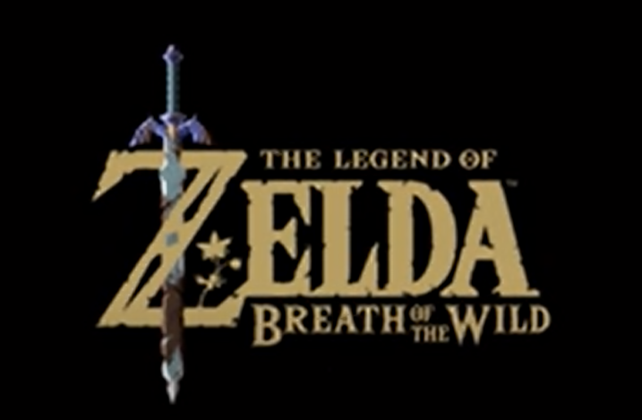

O título foi conquistado após o lançamento uma enquete realizada pela emissora TV Asahi. A votação pôs a aventura de Link e Zelda no Switch à frente de títulos consagrados como Dragon Quest V e Final Fantasy VII, que compõe o Top 3 de acordo com a pesquisa. Assista ao vídeo do trailer do jogo a seguir:
